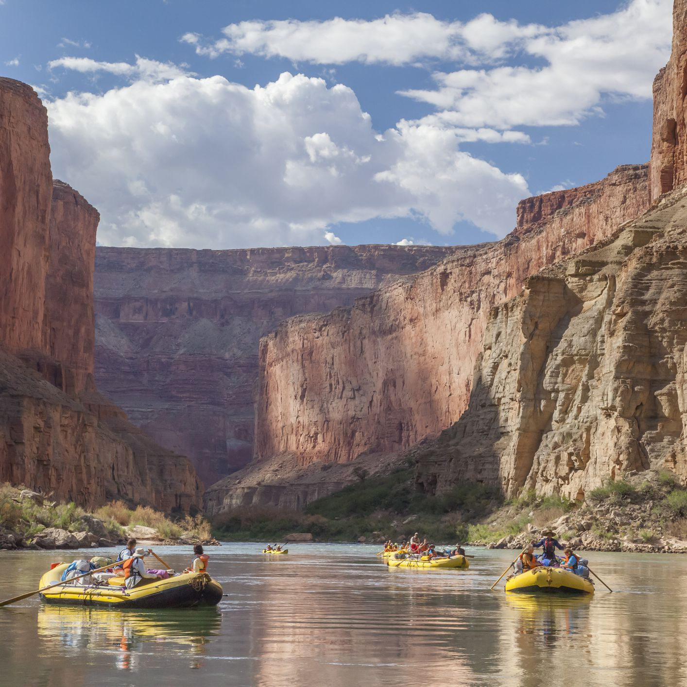
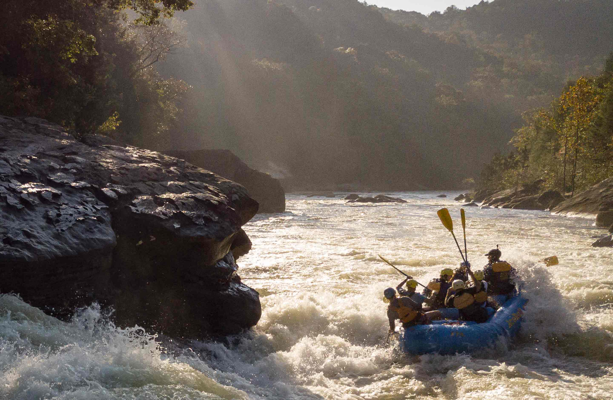

Have An Adventure
Make Memories with Dry Oar
Snake River
The Snake River is 1,078 miles (1,735km) long, and is the largest contributary to the Colorado River. The river starts in Wyoming, and flows through Idaho, and ends in Washington.
Colorado River
The Colorado River is 1,450-miles (2,330 km) long. It starts in the Rocky Mountains, flows through the Grand Canyon, reaches Lake Mead, and ends in Mexico at the Colorado River Delta. Trips are run by 22,000 people annually, which can range from one day to eighteen days
Gauley River
The Gauley River is 105 miles (169km) long. It starts in the Monongahela National Forest on Gauley Mountain as 3 streams, then form one river and flow in the southwest direction until it merges with the New River, where they form the Kanawha River. The river is available to raft year-round, according to water levels, which are monitored often.